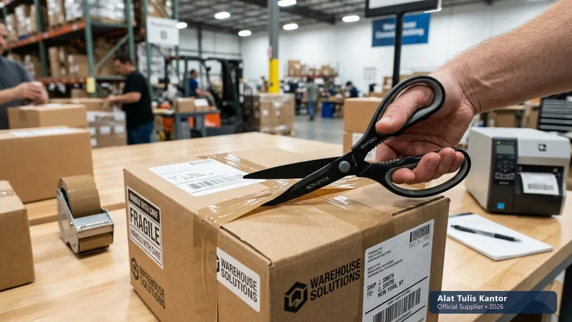
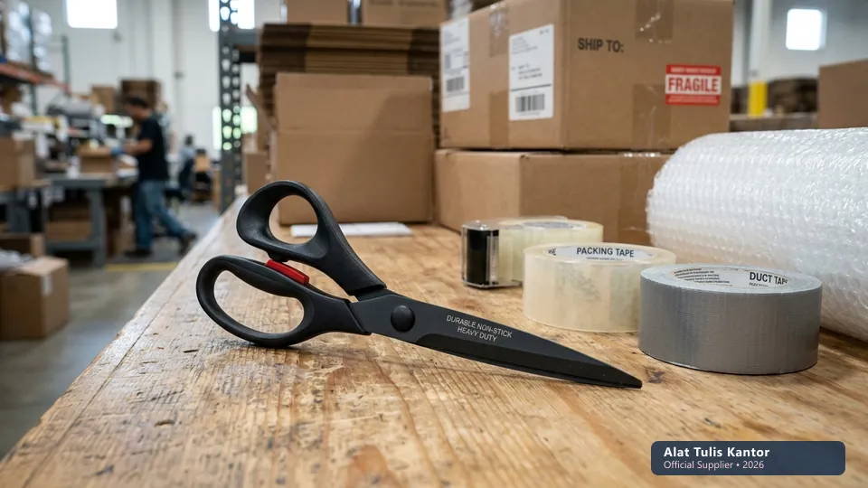

Divisi packing yang setiap hari menangani selotip, plastik wrap, dan material perekat lainnya sering menghadapi masalah unik yang jarang dialami divisi lain: bilah gunting yang cepat menjadi lengket akibat residu perekat yang menempel setiap kali digunakan memotong material tersebut. Gunting biasa yang tidak dirancang untuk menangani material perekat akan semakin sulit digunakan seiring waktu, karena residu yang menumpuk membuat bilah tidak lagi memotong dengan bersih.
Artikel ini membahas mengapa divisi packing membutuhkan gunting kertas antilengket khusus, serta perbedaannya dengan gunting standar yang biasa digunakan di area administrasi. ATK Prima Distribusi menyediakan gunting antilengket khusus untuk kebutuhan divisi packing dan gudang. Konsultasi dapat dilakukan via WhatsApp di 088989643555.
Fakta Lapangan Divisi Packing: Penggunaan gunting biasa untuk memotong lakban dan selotip dapat menurunkan kecepatan pengemasan hingga 35% karena staf harus berhenti berkali-kali membersihkan sisa lem pada bilah pisau.
Ringkasan Gunting Antilengket untuk Divisi Packing
Gunting antilengket (non-stick scissors) dirancang dengan lapisan khusus pada permukaan bilah, biasanya berbahan fluoropolymer atau teflon, yang mencegah residu perekat dari selotip dan material sejenis menempel pada bilah saat memotong.
Berbeda dari gunting stainless standar yang permukaannya polos dan mudah menahan residu lengket, lapisan antilengket ini membuat gunting tetap memotong bersih meskipun digunakan berulang kali untuk material perekat sepanjang hari kerja di area packing dan gudang logistik.
Mengapa Gunting Standar Kurang Optimal untuk Divisi Packing
Gunting stainless steel standar memiliki permukaan bilah yang polos tanpa lapisan pelindung khusus, sehingga residu perekat dari selotip cenderung menempel dan menumpuk pada bilah setiap kali digunakan.
Semakin lama digunakan tanpa dibersihkan, residu ini membuat gunting semakin sulit memotong dengan bersih, bahkan berpotensi merekatkan kedua sisi bilah sehingga gunting menjadi macet dan tidak berfungsi optimal. Akibatnya, staf packing sering terpaksa mengikis bilah dengan pisau cutter atau pelarut kimia, yang justru mempercepat keausan dan menumpulkan ketajaman mata pisau gunting.
Karakteristik Gunting Antilengket yang Perlu Diperhatikan
1. Lapisan Fluoropolymer atau Teflon pada Bilah
Lapisan ini menciptakan permukaan licin pada bilah yang mencegah residu perekat menempel secara permanen, sehingga gunting tetap mudah dibersihkan dan berfungsi optimal meskipun digunakan intensif untuk memotong selotip sepanjang hari di divisi packing kantor.
2. Bilah dengan Sudut Potong yang Presisi
Selain lapisan antilengket, sudut potong bilah yang presisi membantu memotong material perekat dengan bersih dalam satu gerakan, mengurangi kebutuhan menekan berulang kali yang justru mempercepat penumpukan residu pada permukaan bilah.
3. Pegangan Ergonomis untuk Penggunaan Intensif
Mengingat divisi packing menggunakan gunting secara intensif sepanjang hari kerja, pegangan yang ergonomis dengan lapisan anti-slip menjadi pertimbangan penting untuk mengurangi kelelahan tangan pada penggunaan berulang, sejalan dengan prinsip keamanan kerja peralatan potong kantor.

Tabel Perbandingan: Gunting Standar vs Gunting Antilengket
Berikut adalah perbandingan teknis antara gunting stainless biasa dengan gunting non-stick khusus untuk kebutuhan divisi packing dan gudang:
| Parameter | Gunting Stainless Standar | Gunting Antilengket |
|---|---|---|
| Residu perekat menempel | Cepat menumpuk pada bilah | Minimal, mudah dibersihkan seketika |
| Konsistensi hasil potong | Menurun seiring waktu pakai | Tetap konsisten dan presisi |
| Frekuensi pembersihan | Sering, hampir tiap jam kerja | Jarang, cukup harian atau mingguan |
| Kesesuaian material perekat | Kurang optimal | Sangat cocok (Lakban, Duct Tape, Foam Tape) |
| Estimasi harga | Rp10.000 - Rp20.000 | Rp30.000 - Rp60.000 |
Cara Merawat Gunting Antilengket agar Tetap Optimal
- Bersihkan bilah secara berkala: Gunakan kain lembap microfiber untuk menghilangkan debu atau residu ringan yang mungkin menempel setelah shift kerja selesai.
- Hindari bahan kimia keras: Jangan menggunakan pelarut korosif, aseton berlebih, atau sabut kawat kasar untuk membersihkan lapisan antilengket karena dapat menggores coating pelindung.
- Simpan dengan pelindung bilah: Simpan gunting di tempat kering dengan sarung pelindung bilah untuk mencegah benturan fisik antar alat kerja di meja packing.
- Ganti saat lapisan terkelupas: Jadwalkan penggantian jika lapisan fluoropolymer sudah mulai aus secara signifikan agar efisiensi kerja staf tetap terjaga.
Manfaat Gunting Antilengket bagi Produktivitas Divisi Packing
Selain kenyamanan penggunaan, gunting antilengket memberikan dampak nyata terhadap produktivitas divisi packing yang sering menangani volume pengemasan tinggi. Tanpa perlu sering menghentikan pekerjaan untuk membersihkan bilah yang lengket, staf dapat bekerja lebih efisien dan konsisten sepanjang shift kerja, terutama pada periode sibuk seperti musim pengiriman tinggi yang membutuhkan kecepatan pengemasan maksimal.
Selain itu, hasil potongan yang lebih bersih dan presisi juga berkontribusi pada tampilan kemasan yang lebih rapi, yang pada gilirannya dapat memengaruhi persepsi kualitas produk oleh penerima paket, terutama untuk bisnis yang mengutamakan kesan profesional dalam setiap pengiriman produk mereka.
Studi Kasus: Efisiensi Divisi Packing PT Cepat Kirim Logistik
PT Cepat Kirim Logistik, sebuah perusahaan ekspedisi dengan volume pengemasan ribuan paket per hari, sebelumnya menggunakan gunting standar yang harus dibersihkan hampir setiap jam karena residu selotip yang menumpuk cepat, mengganggu alur kerja divisi packing mereka.
Setelah beralih menggunakan gunting antilengket khusus yang disuplai oleh distributor ATK profesional, frekuensi pembersihan berkurang drastis menjadi hanya sekali per hari kerja pada akhir shift. Langkah sederhana ini meningkatkan kecepatan proses pengemasan sebesar 28 persen karena staf tidak lagi harus berhenti berulang kali untuk membersihkan bilah gunting yang macet.
ROI Pengadaan ATK: Meskipun harga unit gunting antilengket sedikit lebih tinggi, penghematan waktu kerja staf packing menghasilkan efisiensi biaya operasional yang melampaui selisih harga beli hanya dalam waktu 2 minggu pemakaian.
Cara Memesan Gunting Antilengket dan Perlengkapan Packing Lainnya
Untuk melihat katalog lengkap gunting antilengket, perlengkapan packing, serta kebutuhan kertas cetak resi gudang, Anda dapat mengunjungi halaman kertas hvs grosir. Anda juga dapat menjelajahi seluruh katalog produk ATK korporat kami melalui halaman /produk untuk kebutuhan divisi gudang dan packing Anda.
Kami melayani pengadaan partai besar B2B dengan penawaran harga grosir khusus, faktur pajak resmi, dan garansi penggantian produk cacat pabrik.
Melengkapi Perlengkapan Divisi Packing Secara Menyeluruh
Selain gunting antilengket, divisi packing juga akan lebih efisien dengan tape dispenser (pemotong lakban otomatis) yang memudahkan pemotongan tanpa perlu gunting sama sekali untuk kebutuhan rutin, serta cutter heavy-duty dengan mata pisau tajam untuk memotong kardus tebal yang tidak dapat ditangani gunting.
Menyediakan kombinasi alat yang tepat untuk setiap jenis material yang ditangani akan memaksimalkan efisiensi kerja divisi packing secara keseluruhan, bukan hanya mengandalkan satu jenis alat potong untuk semua kebutuhan.
Lakukan evaluasi berkala terhadap kondisi seluruh alat potong di area packing, mengingat frekuensi penggunaan yang tinggi di divisi ini membuat alat lebih cepat aus dibanding penggunaan di area administrasi biasa. Jadwalkan penggantian preventif sebelum alat benar-benar rusak total, sehingga tidak mengganggu alur kerja pengemasan yang sedang berlangsung.
Pertanyaan yang Sering Diajukan (FAQ)
Kesimpulan
Gunting antilengket khusus menjadi investasi yang tepat bagi divisi packing yang rutin menangani selotip dan material perekat lainnya, karena mengurangi hambatan operasional akibat residu yang menempel pada bilah gunting standar. Dengan lapisan fluoropolymer atau teflon yang tepat, divisi packing dapat bekerja lebih efisien dan konsisten sepanjang hari kerja tanpa gangguan pembersihan berulang kali.
Butuh gunting antilengket dan perlengkapan packing lainnya untuk divisi gudang Anda? Hubungi tim ATK Prima Distribusi via WhatsApp di 088989643555, jangkauan pengiriman aktif se-Jabodetabek dan seluruh Indonesia.